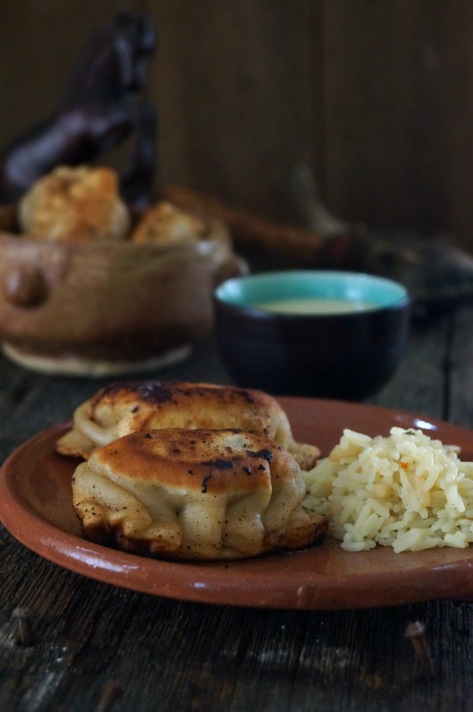

Bansh Dumplings Recipe

A popular Mongolian dumpling dish that is served during special occasions.
Usually made of mutton or beef.
Ingredients for the dough:
- 2 1/2 cups flour
- 1 tps salt
- 1 cup water
- oil to fry
Filling:
- 1 lb ground beef
- 1 small onion
- 2 garlic cloves minced
- salt, red pepper, curry powder, water
Steps:
- mix the dough by combing flower and salt. Add enough water to make a smooth dough and knead for several minutes. Rest for 15 minutes
- Add beef, onion, garlic, salt, pepper, and curry powder to a bowl, and add water until it is a smooth paste.
- oil over medium heat, and divide the dough into 12 small pieces and roll. Add a
conservative amount of filling, and then fold over and crimp
- flip occasionally until evenly brown, and then enjoy with soy sauce or anything of your choice.